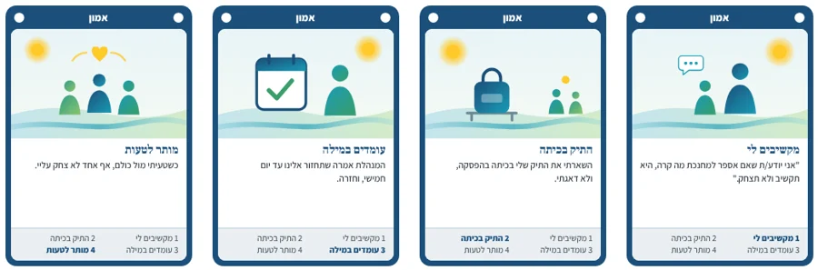

רביעיות חוסן
משחק רביעיות עם 14 מושגי חוסן: אמון, שייכות, ערבות הדדית, תמונת עתיד משותפת ועוד. כל קלף מביא מצב או היגד מהחיים בכיתה ובקהילה. כשמשלימים רביעייה, עוצרים ל"רגע של חוסן" ומספרים איפה ראינו את זה אצלנו.
14 רביעיות56 קלפים3 עד 6 משתתפיםכ־30 דקותאפשר לשחק עם חלק מהרביעיות
⬇ הורדת המשחק (PDF)
מה בקובץ ואיך מדפיסים
- הוראות המשחק, ודף עם הסבר קצר על כל מושג למנחה.
- 14 דפי קלפים, דף לכל רביעייה, ודף לגב הקלף.
- מדפיסים בצבע, לרוחב הדף, בגודל אמיתי (100%). נייר עבה שומר על הקלפים לאורך זמן.
- לגב הקלף: מדפיסים את הדף האחרון על הצד השני של דפי הקלפים, או מדביקים.
- גוזרים לאורך הקצה של המסגרת הצבעונית.